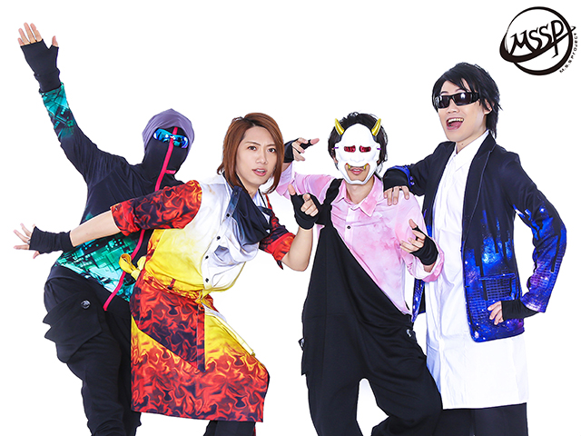
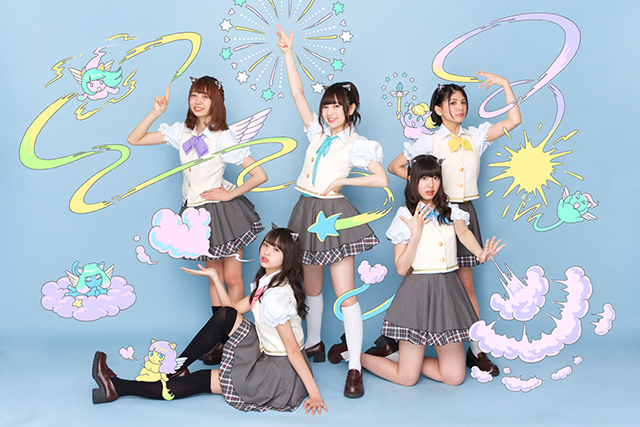

東京ゲームショウ2016
オフィシャルサポーター
東京ゲームショウ2016のオフィシャルサポーターに、ゲーム実況・音楽制作ユニットの「M.S.S Project」と女性アイドルグループの「わーすた」が就任しました！
東京ゲームショウが今年で20周年を迎えたことを記念して、イベントの魅力をより幅広い層の方に伝えていただくために、今回初めての試みとして、ゲーム実況・音楽制作ユニットの「M.S.S Project」と女性アイドルグループの「わーすた」をTGS2016オフィシャルサポーターに任命しました。
ニコニコ生放送の「TGS2016公式動画チャンネル」で配信予定の事前番組に出演するほか、9月15日～18日の会期中には、TGS2016の会場となる幕張メッセからの生配信番組にも登場する予定です。加えて、様々なメディアで、TGS2016を紹介するコンテンツを展開していきます。
【M.S.S Project からのコメント】

「すぽぉぉぉぉん！どうも皆様こんにちは！M.S.S Projectです。僕達4人はゲームが人生と言っても過言ではありませぬ！そんな我々が東京ゲームショウのオフィシャルサポーターという勇者として活躍できることは至極光栄！ゲームの面白さを沢山の方にお伝えできるように頑張りたいと思いますのでよろしくお願い致します！」
■プロフィール
ニコニコ動画の約4割を占めるゲーム実況動画カテゴリを代表する、FB777、KIKKUN-MK-Ⅱ、あろまほっと、eoheohの4人からなるゲーム実況・音楽制作ユニット。Middle Second Sickness Project（中二病企画)の名の通り、ハイテンションなトークが特徴で、ニコニコ動画内での公式生放送はもちろん、東京ゲームショウなどにおいても多くの大手メーカータイトルのプロモーションで活躍するなど、数々のイベントに出演し会場を盛り上げている。また、音楽制作においてもゲーム、テレビドラマ・アニメなどへ多くの楽曲提供をしている。
[オフィシャルブログ] http://lineblog.me/mssp/
【わーすた からのコメント】

「私たち5人ともゲームは子どもの頃からたくさん触れてきて大好きなのですが、東京ゲームショウは熱心なゲームファンの方が集まる場所として、勝手に敷居が高いと思っていました。でも、そんな私たちみたいな人にも興味を持ってもらえるよう、オフィシャルサポーターの活動を通じて、ゲームの魅力や面白さをしっかり伝えていきたいと思います！」
■プロフィール
エイベックスのアイドル専門レーベル「iDOL Street」の第4弾アイドルグループとして、坂元葉月、廣川奈々聖、松田美里、小玉梨々華、三品瑠香の5人で2015年3月29日結成。グループ名は「The World Standard」の略。2016年5月4日に『The World Standard』でメジャーデビュー。キュートなルックスに加え、女性クリエイターを積極起用したサウンドとコンセプトワークの面白さで人気急上昇中の世界に照準を合わせ活動する、デジタルネイティブ世代アイドル。SNSとリアルアイドル活動を通じて世界にKAWAIIジャパンアイドルカルチャーを
発信中。
[オフィシャルサイト] http://wa-suta.world/